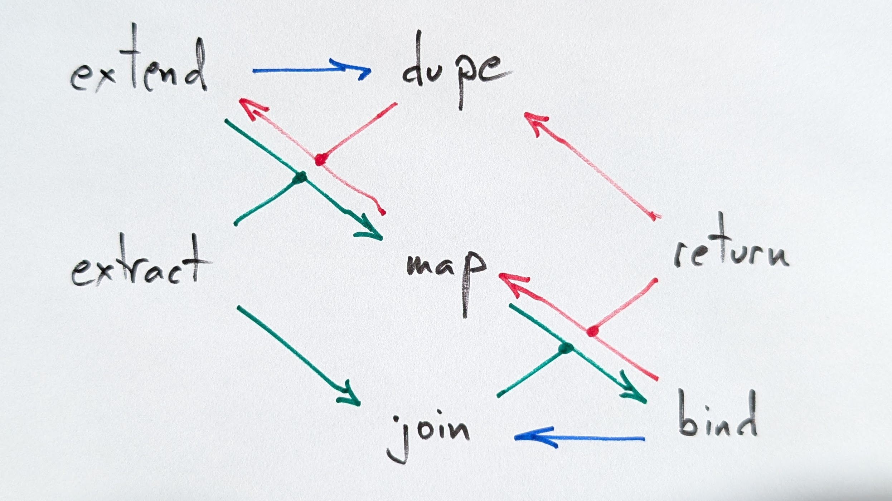

class:middle, no-number background-image: url(bg_home.png) background-position: top <span><img style="position:absolute; right:5%; bottom:5%; width:24%;" src="Tarides.svg"/></span> <span class="title" style="position:absolute; top:33%; color: white;">Monadic Programming</span> --- # Stack Abstract type and signature ```ocaml type 'a stack val empty : return -> 'a stack val push : 'a stack -> 'a -> 'a stack val pop : 'a stack -> ('a stack * 'a) option ``` -- Specification invariants — this ain't Caml ```ocaml pop (empty ()) ≅ None (* [pop] on [empty] fails *) pop (push s x) ≅ Some (s, x) (* [pop] is left inverse on [push] *) ``` --- # Queue Abstract type and signature ```ocaml type 'a queue val empty : return -> 'a queue val add : 'a queue -> 'a -> 'a queue val take : 'a queue -> ('a queue * 'a) option ``` Specification invariants — this ain't Caml ```ocaml take (empty ()) ≅ None take (add (empty ()) x) ≅ Some (empty (), x) if take q = Some (p, y) then take (add q x) ≅ Some (add p x, y) ``` --- # Monad Abstract type and signature ```ocaml type 't monad val return : 'a -> 'a monad (* a.k.a. [unit] *) val bind : 'a monad -> ('a -> 'b monad) -> 'b monad ``` Specification invariants — this ain't Caml ```ocaml bind m return ≅ m (* [return] right unit *) bind (return x) f ≅ f x (* [return] left unit *) bind (bind m f) g ≅ bind m (fun x -> bind (f x) g) (* [bind] associative *) ``` --- # Monad Abstract type and signature ```ocaml type 't monad val return : 'a -> 'a monad (* a.k.a. [unit] *) val bind : 'a monad -> ('a -> 'b monad) -> 'b monad ``` Specification invariants — this ain't Caml ```ocaml m >>= return ≅ m (* [return] right unit *) return x >>= f ≅ f x (* [return] left unit *) (m >>= f) >>= g ≅ m >>= (fun x -> f x >>= g) (* [bind] associative *) ``` --- # Monad Abstract type and signature ```ocaml type 't monad val return : 'a -> 'a monad (* a.k.a. [unit] *) val bind : 'a monad -> ('a -> 'b monad) -> 'b monad ``` Specification invariants — this ain't Caml ```ocaml let* x = m in return x ≅ m (* [return] right unit *) let* x = return x in f x ≅ f x (* [return] left unit *) let* y = let* x = m in let* x = m in f x in ≅ let* y = f x in (* [bind] associative *) g y g y ``` --- # Boring Monad Examples Maybe: `option` ```ocaml let return = Option.some let bind = Option.bind ``` Iteration: `list` ```ocaml let return x = [x] let bind x f = List.concat_map f x ``` Promise: `Lwt.t` ```ocaml let return = Lwt.return let bind = Lwt.bind ``` --- # Monad Notations ```ocaml let transp m = let rec loop acc = function | [] | [] :: _ -> List.rev acc | u -> loop List.(map hd u :: acc) List.(map tl u) in loop [] m let mult a b = List.concat_map (fun row -> [ List.concat_map (fun col -> [ List.(map2 ( * ) row col |> fold_left ( + ) 0) ]) (transp b) ]) a let ( >>= ) u f = List.concat_map f u let mult a b = a >>= fun row -> [ transp b >>= fun col -> [ List.(map2 ( * ) row col |> fold_left ( + ) 0) ] ] let ( let* ) u f = List.concat_map f u let mult a b = let* row = a in [ let* col = transp b in [ List.(map2 ( * ) row col |> fold_left ( + ) 0) ] ] ``` --- # Entertaining Monads Haskell's `IO` ```ocaml type 'a t = unit -> 'a let return x () = x (* a.k.a. [pure] *) let bind e f () = f (e ()) () let main e = ignore (e ()) let print_char c () = Stdlib.print_char c ``` Parsers ```ocaml type ('a, 'tok) pa = 'tok Seq.t -> ('a * 'tok Seq.t) option let pass c tok_seq = Some (c, tok_seq) (* i.e. [return] *) let fail _ = None let bind pa f tok_seq = Option.bind (pa tok_seq) (fun (x, pa) -> f x pa) ``` --- # Hands-On Use and amend files `hands-on/pa.ml` and `hands-on/sexp.ml` to write a S-expression parser using monadic parsing. Answers are in directory `answers`. ```ocaml type Sexp.t = | Atom of string | Expr of Sexp.t list ``` Write a parser `Sexp.pa : (Sexp.t, char) Pa.t` such that: ```ocaml # "(lang dune 3.17)" | String.to_seq |> Sexp.pa |> Option.get |> fst;; - : sexp : Expr [Atom "lang"; Atom "dune"; Atom "3.17"] ``` --- # Monad Fun Facts A monad can be defined either: * Using `return` and `bind` — the software engineer's way * Using `map` and `join` — the mathematician's way ```ocaml val map : ('a -> 'b) -> 'a monad -> 'b monad val join : 'a monad monad -> 'a monad join (map return m) = m join (return m) = m join (join m) = join (map join m) (* [map + join ≅ bind] *) (* Together [join] and [map] entails [bind] *) let bind m f = m |> map f |> join (* [bind] entails [join] *) let join m = bind m Fun.id (* Monads are functors: [bind] entails [map] *) let map f m = bind m (fun x -> return (f x)) ``` --- # Functor **Beware**! This is not a Caml functor, it is a functor in the category theory sense. Abstract type and signature ```ocaml type 'a t val map : ('a -> 'b) -> 'a t -> 'b t ``` Specification invariants — this ain't Caml ```ocaml map (fun x -> g (f x)) s ≅ map f (map g s) map Fun.id ≅ Fun.id ``` --- # Applicative ```ocaml type 'a t val app : ('a -> 'b) t -> 'a t -> 'b t (* Monads are applicative: [bind] entails [app] *) let app f x = let* f = f in let* x = x in return (f x) let ( <@> ) = app (* a.k.a. [( <*> )] *) val combine : 'a t -> 'b t -> ('a * 'b) t (* [map + combine ≅ app] *) (* Together [combine] and [map] entails [app] *) let app f x = map (fun (f, x) -> f x) (combine f x) (* [app] entails [combine] *) let combine x y = return (fun x y -> (x, y)) <@> x <@> y (* Applicatives are functors: [app] entails [map] *) let map f x = return f <@> x ``` --- # Applicative Notations ```ocaml let combine o p = match o, p with | Some x, Some y -> Some (x, y) | _ -> None let prod3 o p q = Option.map (fun ((x, y), z) -> x * y * z) (combine (combine o p) q) let ( let+ ) o f = Option.map f o let ( and+ ) = combine let prod3' o p q = let+ x = o and+ y = p and+ z = q in x * y * z let ( <@> ) f o = Option.map (fun (f, x) -> f x) (combine f o) let prod3'' o p q = Some ( * ) <@> (Some ( * ) <@> o <@> p) <@> q Some (Printf.sprintf "%i * %i * %i") <@> Some 2 <@> Some 3 <@> Some 7 ``` --- # Comonad Abstract type and signature ```ocaml type 't comonad val extract : 'a comonad -> 'a val extend : 'a comonad -> ('a comonad -> 'b) -> 'b comonad ``` Specification invariants — this ain't Caml ```ocaml (* [extract] right unit *) extend w extract ≅ w (* [extract] left unit *) extract (extend x) f ≅ f x (* [extend] associative *) extend (extend w f) g ≅ extend w (fun x -> g (extend x f)) ``` --- # Comonad Examples Infinite deferred streams ```ocaml type 'a cons = Cons of 'a * 'a stream and 'a stream = unit -> 'a cons let extract strm = let (Cons (x, _)) = strm () in x let rec extend (strm : 'a stream) f () = let Cons (_, tail) = strm () in Cons (f strm, extend tail f) ``` Timestamped data ```ocaml type 'a tstamp = 'a * float let extract = fst let extend x (g : 'a stamp -> 'b) : 'b stamp = (g x, Unix.gettimeofday ()) ``` --- # Comonad Fun Facts A comonad can be defined either: * Using `extract` and `extend` — the software engineer's way * Using `map` and `dupe` — the mathematician's way ```ocaml val map : ('a -> 'b) -> 'a comonad -> 'b comonad val dupe : 'a comonad -> 'a comonad comonad map extract (dupe w) = w extract (dupe w) = w dupe (dupe w) = map dupe (dupe w) (* [map + dupe ≅ extend] *) (* Together [map] and [dupe] entails [extend] *) let extend w f = map f (dupe w) (* [extend] entails [dupe] *) let dupe w = extend w Fun.id (* Comonads are functors: [extend] entails [map] *) let map f w = extend w (fun x -> f (extract x))``` --- # Recap ```ocaml val map : ('a -> 'b) -> 'a t -> 'b t val app : ('a -> 'b) t -> 'a t -> 'b t val bind : 'a t -> ('a -> 'b t) -> 'b t val extend : 'a t -> ('a t -> 'b) -> 'b t val return : 'a -> 'a t val extract : 'a t -> 'a val join : 'a t t -> 'a t val dupe : 'a t -> 'a t t val combine : 'a t -> 'b t -> ('a * 'b) t ``` --- # Recap, cont'd  --- # Binding Operator Abuse No `bind` binding operator ```ocaml let ( let< ) ic f = Fun.protect ~finally:(fun () -> In_channel.close ic) (fun () -> f ic) let file_to_string file = let< ic = In_channel.open_text file in In_channel.input_all ic ``` No monad _Monadish_ programming? --- # Monadish Hell ```ocaml # #require "lwt.unix";; # let f s = ignore (Lwt_io.printl s); Lwt.return;; val f : string -> 'a -> 'a Lwt.t = <fun> # let ( >>= ) = Lwt.bind;; val ( >>= ) : 'a Lwt.t -> ('a -> 'b Lwt.t) -> 'b Lwt.t = <fun> # Lwt_io.printl "hello" >>= f "world";; world hello - : unit = () # let ( let* ) = Lwt.bind;; val ( let* ) : 'a Lwt.t -> ('a -> 'b Lwt.t) -> 'b Lwt.t = <fun> # let* _ = Lwt_io.printl "hello" in f "world" ();; hello world - : unit = () ```